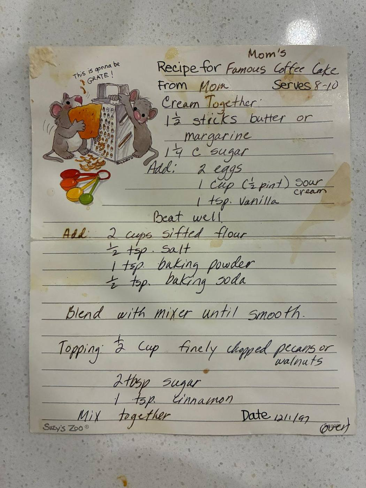
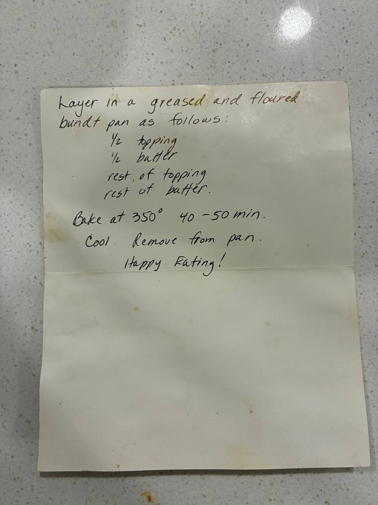

Desserts
Mom's Famous Coffee Cake
From the kitchen of Mom
Oven350°F
Bake40–50 min
PanBundt
Serves8–10


Mom's original card (front and back) · tap to enlarge
Ingredients
Cake
Topping
Method tap a step to mark it done
- Cream together the butter and sugar.
- Add the eggs, sour cream and vanilla. Beat well.
- Add the flour, salt, baking powder and baking soda. Blend with a mixer until smooth.
- Mix the topping ingredients together.
- Layer in a greased and floured bundt pan: half the topping, half the batter, the rest of the topping, the rest of the batter.
- Bake at 350°F for 40–50 minutes.
- Cool. Remove from the pan.
Mom’s tips
- Happy Eating!